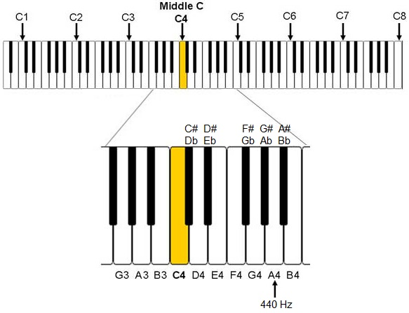

While modern synthesizer keyboards commonly have either 61, 76 or 88 keys, small MIDI controllers are available with 25 notes.
| Keys | Octaves | First note | Last note |
| 25=24+1 | 2 | C3 | C5 |
| 49=48+1 | 4 | C2 | C6 |
| 61=60+1 | 5 | C2 | C7 |
| 76=8+60+8 | 5 | E1 | G7 |
| 88=3+85 | 7 | A0 | C8 |
Middle C is the name given to the musical note C which is in the middle of the piano keyboard.

Diagram of treble, alto and bass clefs with identical-sounding musical notes aligned vertically.